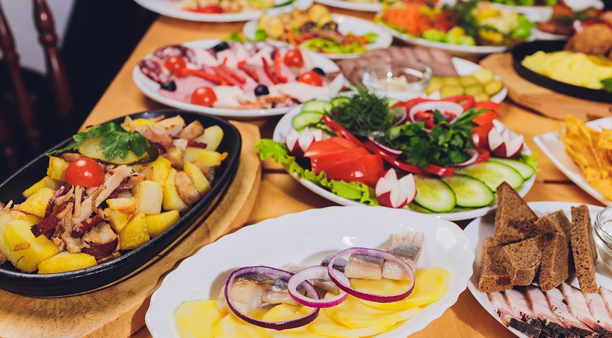
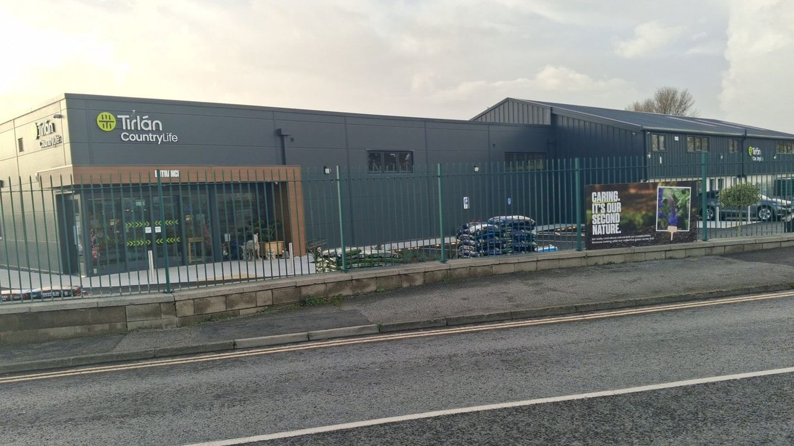
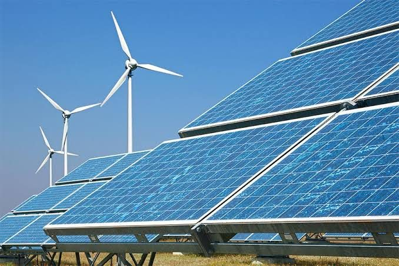

Food & beverage
Electrical, mechanical and process installations for food and drink producers, including live-plant extensions where uptime matters.
Talk to us about food & beverageDifferent industries, the same standards. Find yours below, or ask us about anything technical.

Electrical, mechanical and process installations for food and drink producers, including live-plant extensions where uptime matters.
Talk to us about food & beverage
Electrical, mechanical and process works for farms, co-ops and agri-processing sites.
Talk to us about agriculture
Building works and M&E design and installation for developers and main contractors, from extensions to new builds.
Talk to us about construction
Efficient heating, heat pumps and power systems that replace fossil-fuel plant and cut running costs.
Talk to us about energy, power & renewablesPharma, biotech and medical: controlled-environment installations and commissioning documented to exacting standards.
Talk to us about life sciences
Hotels and venues: electrical, fire safety, heating and data delivered around live guests and events.
Talk to us about hospitality
Hospitals and care settings: power, life-safety and building systems installed with minimal disruption.
Talk to us about healthcareTell us what you need and we’ll tell you how we can help.